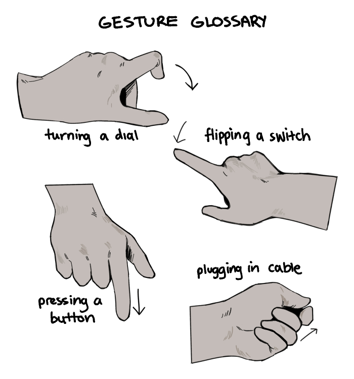
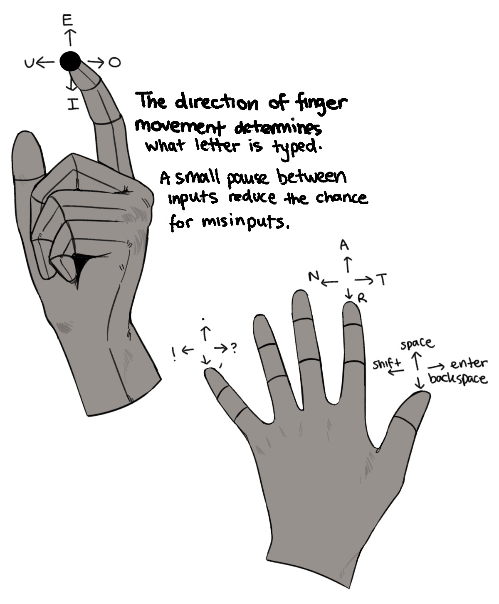
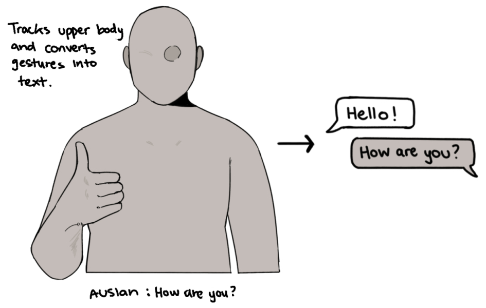

<!DOCTYPE html>
<html lang="en">
  <head>
    <meta charset="UTF-8" />
    <meta http-equiv="X-UA-Compatible" content="IE=edge" />
    <meta name="viewport" content="width=device-width, initial-scale=1.0" />
    <title>jennifer nguyen | gdes30008</title>
    <link rel="stylesheet" href="/../../stylesheet-appearance.css" />
    <link rel="stylesheet" href="/../../stylesheet-layout.css" />
    <script src="scripts.js"></script>
  </head>
</html>

<body>
  <h1>human computer in your face!</h1>

  <h2>gesture glossary</h2>
  <p>
    Common human-machine interactions include turning dials, flipping switches
    (or toggles), pressing buttons and plugging in cables. These are all
    tactile, hand-based gestures. In my opinion, it is important to allow for
    the use of multiple senses and body parts into human-machine interaction,
    both for accessiblity and to provide an improved experience. Examples of
    human-machine interactions that use other senses include voice commands and
    eye tracking.
  </p>

  
  <br />

  <h2>speculative hci</h2>
  <p>
    I tried to imagine some human-machine interactions that do not currently
    exist:
  </p>
  <ul>
    <li>
      A keyboard in the form of a glove with sensors that map the motion of
      individual fingers to different keys, allowing for rapid typing once you
      get used to the controls. The wearable element means that it takes up less
      space than a standard keyboard.
      
    </li>
    <li>
      Sign-language-to-text: A version of speech-to-text adapted for those with
      speech/hearing issues that utilizes motion tracking.
      
    </li>
  </ul>

  <br />
  <a href="/../../index.html">BACK</a>
</body>
